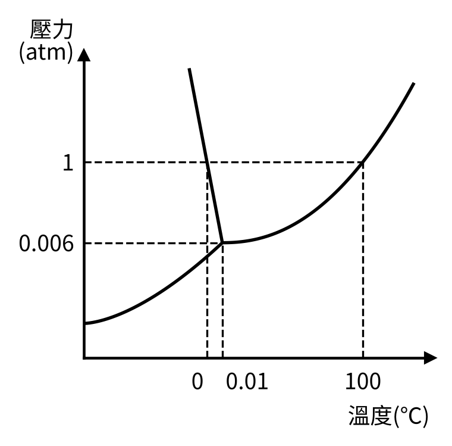
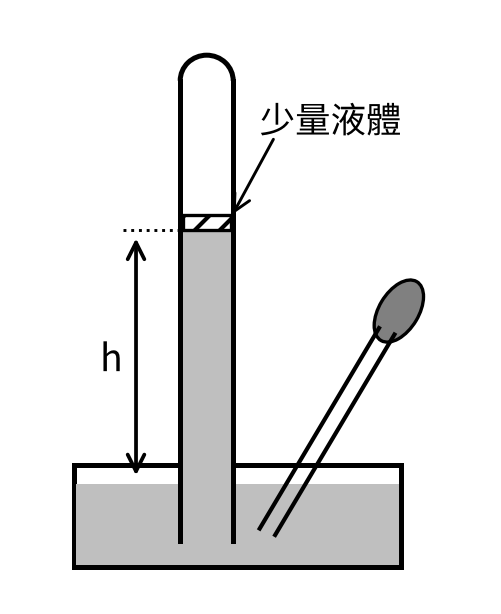
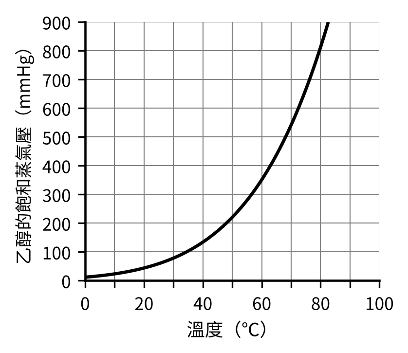
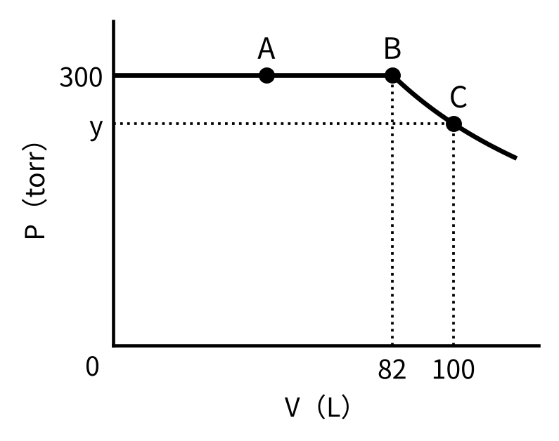
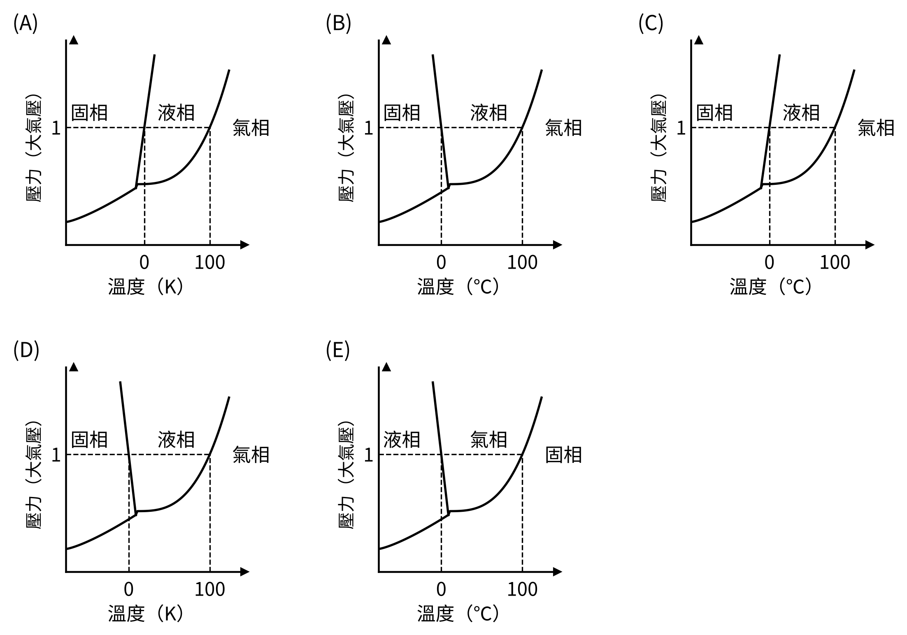
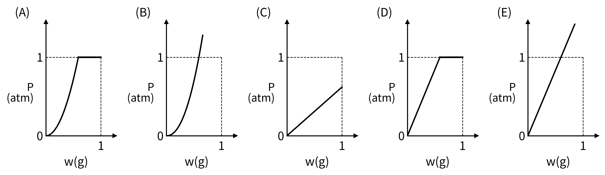
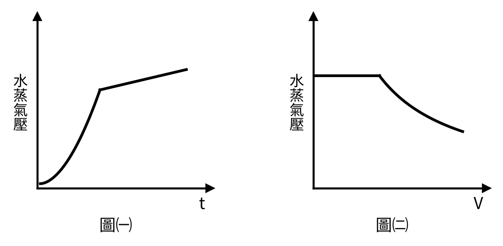
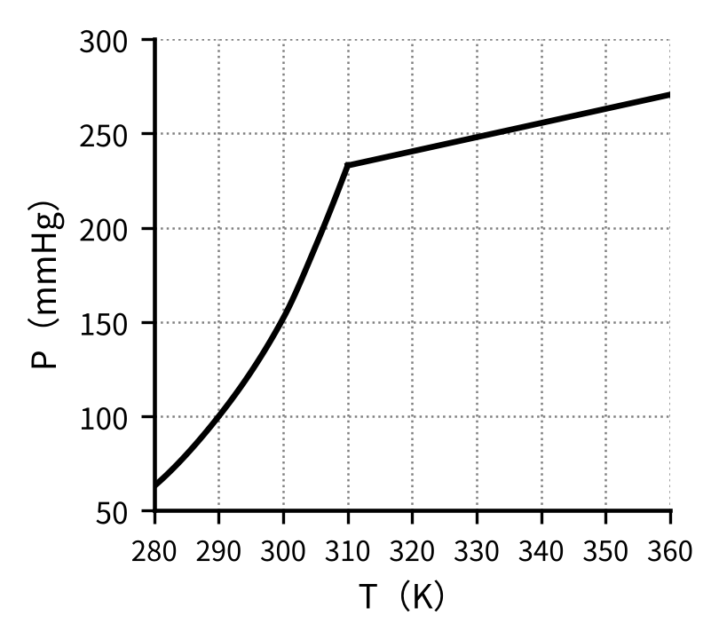
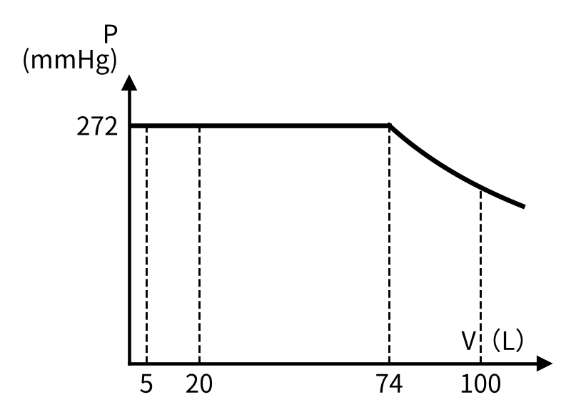

基礎題
下列有關物質三態變化的敘述，何者正確？
- (A) 蒸發是液體的汽化方式之一，須在特定的溫度才能發生
- (B) 無論何種純物質，當質量一定時，汽化熱必小於熔化熱
- (C) 同一物質的莫耳熔化熱與莫耳凝固熱同值異號
- (D) 固態物質必須先轉變成液態後，才可再轉變為氣態
- (E) 液體不具有一定的體積與形狀
看答案與詳解
答案：(C)
(B) ✘ 汽化要把分子完全拉開，汽化熱一般大於熔化熱。
(C) ✔ 熔化與凝固互為逆過程，熱量同值異號。
(D) ✘ 固體可直接昇華成氣體（乾冰、碘）。
(E) ✘ 液體有一定體積，沒有一定形狀。
下列敘述何者有誤？（多選）
- (A) 凝相包括液、固兩相
- (B) 同物質的凝固熱等於熔化熱，但符號相反
- (C) 一般而言，沸點愈高的物質，莫耳蒸發熱愈大
- (D) 熔點愈高的物質，熔解熱愈大
- (E) 所有物質凝固時體積均縮小
看答案與詳解
答案：(D)(E)
(B) ✔ 凝固與熔化互為逆過程，熱量同值異號。
(C) ✔ 沸點高代表分子間引力大，汽化時要吸收較多熱，一般莫耳蒸發熱較大。
(D) ✘ 熔點與熔化熱沒有必然關係，例如冰熔點 0℃，莫耳熔化熱 6.0 kJ／mol，比熔點 327℃ 的鉛（4.8 kJ／mol）還大。
(E) ✘ 水凝固成冰體積變大，不是所有物質都縮小。
本題問「有誤」，選 (D)(E)。
20℃時於密閉容器內，含有水與其水蒸氣，兩相達平衡，今若縮小容器體積，溫度不變，則下列何項有顯著變化？
- (A) 飽和蒸氣壓
- (B) 蒸氣中之分子數
- (C) 蒸氣中之分子濃度
- (D) 蒸氣分子平均動能
看答案與詳解
答案：(B)
(A) ✘ 溫度不變，飽和蒸氣壓不變。
(B) ✔ 體積縮小，部分蒸氣凝結成水，蒸氣分子數變少。
(C) ✘ P＝(n／V)RT，P、T 不變 → 分子濃度 n／V 不變。
(D) ✘ 平均動能只與溫度有關。
下列敘述，何者正確？
- (A) HCl(g)、NH3(g)、Cl2(g) 等適用於亨利定律
- (B) 定溫下，液體的飽和蒸氣壓為定值，與容器體積無關，而與液體量多寡有關
- (C) 液體的分子間作用力愈大，沸點愈高，蒸氣壓愈高
- (D) 液體在正常沸點時，其蒸氣壓為一大氣壓
- (E) 沸點上升度數公式：ΔTb＝KbCm適用於揮發性、非電解質溶質之溶液
看答案與詳解
答案：(D)
(B) ✘ 飽和蒸氣壓只與液體種類、溫度有關，與體積、液體量都無關。
(C) ✘ 分子間作用力愈大 → 沸點愈高，但蒸氣壓愈「低」。
(D) ✔ 正常沸點：蒸氣壓＝1 atm 時的溫度。
(E) ✘ 公式適用於「不揮發性」、非電解質溶質的稀薄溶液。
乙醇與水的正常沸點各為78℃及100℃，下列敘述何者為真？（多選）
- (A) 同溫下，乙醇之蒸氣壓小於水
- (B) 沸騰時，兩者之蒸氣壓相等
- (C) 乙醇之莫耳汽化熱大於水
- (D) 兩者之蒸氣壓相等時，水的溫度高於乙醇之溫度
- (E) 同溫下，乙醇之汽化速率大於水
看答案與詳解
答案：(B)(D)(E)
(A) ✘ 乙醇沸點較低，同溫下蒸氣壓較大。
(B) ✔ 在同一外壓下沸騰，蒸氣壓都等於外壓。
(C) ✘ 乙醇分子間引力較小，莫耳汽化熱較小（約 39 kJ／mol＜水 41 kJ／mol）。
(D) ✔ 要達相同蒸氣壓，水必須在較高溫度（例如 1 atm：水 100℃、乙醇 78℃）。
(E) ✔ 乙醇較易揮發。
下列對水的沸點與蒸氣壓的敘述何者正確？（多選）
- (A) 水必須在達沸點時才會出現蒸氣壓
- (B) 水的沸點隨大氣壓力而改變
- (C) 在任何壓力下水沸點均為100℃
- (D) 水在正常沸點時，蒸氣壓為760 mmHg
- (E) 水在50℃時無論何條件均不可能沸騰
看答案與詳解
答案：(B)(D)
(B) ✔ 沸點＝蒸氣壓等於外壓時的溫度，外壓改變沸點就改變。
(C) ✘ 只有外壓 1 atm 時才是 100℃。
(D) ✔ 正常沸點的定義。
(E) ✘ 把外壓降到 50℃ 的飽和蒸氣壓（約 92.6 mmHg），水在 50℃ 就會沸騰。
在 1.5 atm 時，關於水的凝固點與沸點，何者正確？
- (A) 凝固點高於 0℃，沸點高於 100℃
- (B) 凝固點低於 0℃，沸點低於 100℃
- (C) 凝固點低於 0℃，沸點高於 100℃
- (D) 凝固點高於 0℃，沸點低於 100℃
- (E) 凝固點等於 0℃，沸點等於 100℃
看答案與詳解
答案：(C)
汽化曲線向右上 → 加壓使沸點上升，高於 100℃。選 (C)。
例：壓力鍋（沸點升高）、溜冰刀下加壓融冰。
在玉山山頂，有關水的敘述下列何者正確？（多選）
- (A) 水的沸點＞100℃
- (B) 冰的熔點＞0℃
- (C) 水的沸點與凝固點差100℃
- (D) 水的沸點與凝固點差＜100 K
- (E) 水的沸點與凝固點差＞100 K
看答案與詳解
答案：(B)(D)
(A) ✘ 外壓小，沸點低於 100℃。
(B) ✔ 水的熔化曲線向左傾，壓力減小時熔點略為升高（＞0℃）。
(C)(E) ✘ (D) ✔ 沸點降低、熔點略升高，兩者差距小於 100℃（＝100 K）。
冬天的高山常會有降雪的情形，剛下完雪並不是路面最容易打滑的時候，路面積雪經過來往的汽車碾壓後會變得更容易打滑，推測此一現象之原因應為下列何者？
- (A) 汽車碾壓後，柏油融化使路面變得更溼滑
- (B) 汽車碾壓積雪導致積雪上方壓力增大，積雪更難融化，反而因此堆積更緊密而無縫隙，摩擦力下降
- (C) 汽車碾壓積雪導致積雪上方壓力下降，積雪便開始融化成雪水導致摩擦力下降
- (D) 汽車碾壓積雪導致積雪上方壓力增大，積雪因而融化，汽車一離開後壓力下降，融化的雪水又慢慢凝固成冰，路面上的雪水與薄冰摩擦力比積雪小
- (E) 汽車碾壓在積雪上，輪胎承受壓力增大使輪胎融化，導致摩擦力下降
看答案與詳解
答案：(D)
車輪壓過時積雪受壓、熔點降低而熔化成水；車子離開後壓力恢復，水又凝固成薄冰。
雪水與薄冰的摩擦力比鬆軟的積雪小，所以更容易打滑。選 (D)。
水的相圖如右圖所示，則下列敘述哪一個選項不正確？

- (A) 欲使液態水汽化，可以加熱或減壓
- (B) 當外界壓力小於 0.006 atm 時，冰可能發生昇華現象
- (C) 外界壓力愈大，液態水存在的溫度範圍愈大
- (D) 0℃時，當外界壓力由大於 1 atm 開始下降，水可能發生凝結現象
- (E) 0.01℃、0.006 atm 時，冰、液態水與水蒸氣同時存在
看答案與詳解
答案：(D)
(B) ✔ 壓力低於三相點（0.006 atm）沒有液相，冰受熱直接昇華。
(C) ✔ 加壓：熔點下降、沸點上升，液態範圍變大。
(D) ✘ 0℃、壓力大於 1 atm 為液態；降壓越過熔化曲線進入固相區，發生的是「凝固」（液→固），不是「凝結」（氣→液）。
(E) ✔ 三相點，三相共存。
本題問「不正確」，選 (D)。
某溫度下，一容器內有相對溼度為 40％的空氣，若溫度不變，將容器體積變為原來的 2／3，則容器內的相對溼度變為多少％？（該溫度下，水的飽和蒸氣壓為 40 mmHg）
- (A) 100
- (B) 80
- (C) 75
- (D) 60
- (E) 50
看答案與詳解
答案：(D)
定溫下體積變為 2／3 → 分壓變為 16 × 3／2＝24 mmHg（＜40，不會凝結）
相對溼度＝24／40 × 100％＝60％，選 (D)。
撒哈拉沙漠某地氣溫為40℃，相對溼度20％，則該地的水蒸氣含量為多少 g／m3？（已知40℃時，水的飽和蒸氣壓為55 mmHg）
答：
看答案與詳解
答案：10.2 g／m3
取 1 m3＝1000 L：n＝PV／RT＝(11／760 × 1000)／(0.082 × 313)≒0.564 mol
質量＝0.564 × 18≒10.2 g → 10.2 g／m3
進階題
於甲、乙、丙三支，100公分長，一端封閉之玻璃管中，各注滿水銀，然後將其倒置於一水銀槽中，並以滴管將少量（甲）水，（乙）乙醚，（丙）乙醇分別注入管中，而浮於水銀柱的上方。在25℃及一大氣壓下，各管內水銀面上尚餘有少量液體，則有關各管內水銀柱高度（圖中之 h）之順序，何者為正確？

- (A) （甲）＞（丙）＞（乙）
- (B) （乙）＞（丙）＞（甲）
- (C) （甲）＞（乙）＞（丙）
- (D) （甲）＝（乙）＝（丙）
看答案與詳解
答案：(A)
蒸氣壓：乙醚＞乙醇＞水 → 汞柱被壓下愈多，h 愈小。
h：水（甲）＞乙醇（丙）＞乙醚（乙），選 (A)。
80℃，100 mmHg苯蒸氣在定容下被冷卻到20℃時，以何者存在？（20℃苯的蒸氣壓為75 mmHg）
- (A) 100 mmHg苯蒸氣
- (B) 無苯蒸氣，只有苯液體
- (C) 75 mmHg苯蒸氣
- (D) 83 mmHg苯蒸氣
- (E) 苯液體與75 mmHg苯蒸氣
看答案與詳解
答案：(E)
83＞20℃ 的飽和蒸氣壓 75 mmHg → 不可能，部分苯凝結
→ 苯液體與 75 mmHg 苯蒸氣共存，選 (E)。
某容器內含有少量水及空氣，平衡壓力760 mmHg，若將容器壓縮使體積減半，在同一溫度測得平衡壓力1500 mmHg，則在此溫度時之水蒸氣壓為若干 mmHg？
- (A) 76
- (B) 60
- (C) 20
- (D) 10
看答案與詳解
答案：(C)
空氣分壓：壓縮前 760－x，體積減半後 2(760－x)
2(760－x)＋x＝1500 → 1520－x＝1500 → x＝20 mmHg，選 (C)。
25℃水之飽和蒸氣壓為24 mmHg，今一容器在25℃ N2 及水汽全壓力600 mmHg，且水汽壓力為20 mmHg，同溫下，下列敘述何者正確？（多選）
- (A) 此時容器內水汽未達飽和
- (B) 此時容器內含N2，分壓為580 mmHg
- (C) 若把體積加倍，則壓力變為290 mmHg
- (D) 若把容器體積減半，則重新建立平衡時壓力為1184 mmHg
- (E) 體積減半後蒸氣量減半
看答案與詳解
答案：(A)(B)(D)
(B) ✔ PN2＝600－20＝580 mmHg。
(C) ✘ 體積加倍：N2 290、水汽 10（更不飽和），總壓 300 mmHg。
(D) ✔ 體積減半：N2 1160；水汽若不凝結應為 40＞24 → 部分凝結，水汽壓 24；總壓 1160＋24＝1184 mmHg。
(E) ✘ 水蒸氣量 ∝ PV：原 20V，減半後 24 × V／2＝12V，變為原來的 0.6 倍，不是一半。
t℃時水的飽和蒸氣壓為 25 mmHg，若空氣相對溼度為 60％，於 t℃將 760 mmHg 之空氣 10 升壓縮為 5 升，則壓力變為多少 mmHg？
- (A) 1520
- (B) 1515
- (C) 1505
- (D) 1490
- (E) 1340
看答案與詳解
答案：(B)
體積減半：乾空氣 745 × 2＝1490 mmHg
水蒸氣若不凝結應為 30＞25 → 部分凝結，P水＝25 mmHg
P總＝1490＋25＝1515 mmHg，選 (B)。
〔易錯〕直接 760 × 2＝1520，忘了水蒸氣最多只能到飽和蒸氣壓。
24℃時水之飽和蒸氣壓22.1 mmHg，已知在一密閉器內24℃時之相對溼度為30％，當溫度降至13℃時，相對溼度為57％（容器體積不變），則13℃時水之飽和蒸氣壓為
- (A) 11.6 mmHg
- (B) 11.2 mmHg
- (C) 10.4 mmHg
- (D) 9.81 mmHg
看答案與詳解
答案：(B)
定容降溫（未凝結）：P ∝ T → 13℃ 時 P＝6.63 × 286／297≒6.38 mmHg
13℃ 飽和蒸氣壓＝6.38／57％≒11.2 mmHg，選 (B)。
100℃時，在 30.6 L 的真空容器中置入 14.4 g 的水，壓力為 P1。溫度不變，將容器壓縮，使體積減為一半，壓力變為 P2，則下列何者正確？
- (A) P2＝(1／2)P1
- (B) P2＝(4／3)P1
- (C) P2＝(3／2)P1
- (D) P2＝2P1
- (E) P2＝(5／4)P1
看答案與詳解
答案：(E)
先假設全部汽化：P＝0.8 × 0.082 × 373／30.6≒0.8 atm＜1 atm → 確實全為氣態，P1＝0.8 atm
體積減半：若仍全為氣態應為 1.6 atm＞1 atm → 部分凝結，P2＝1 atm
P2／P1＝1／0.8＝5／4，選 (E)。
▲ 第 3-20～3-21 題為題組：在100℃時，於1 L真空容器中充入6.4 g氧氣及1.80 g水，平衡時：
容器內總壓力為若干？
- (A) 9.18 atm
- (B) 6.12 atm
- (C) 5.12 atm
- (D) 7.12 atm
看答案與詳解
答案：(D)
水 0.1 mol 若全部汽化：P＝0.1 × 0.082 × 373≒3.06 atm＞1 atm（100℃ 飽和蒸氣壓）→ 只能部分汽化，P水＝1 atm
P總＝6.12＋1＝7.12 atm，選 (D)。
若將容器體積擴大為5 L，溫度仍保持100℃，此時器內氣體總壓力為若干？
- (A) 3.12 atm
- (B) 2.44 atm
- (C) 1.22 atm
- (D) 1.84 atm
- (E) 1.42 atm
看答案與詳解
答案：(D)
水 0.1 mol 在 5 L 若全部汽化：3.06／5≒0.61 atm＜1 atm → 全部汽化，P水＝0.61 atm
P總＝1.22＋0.61≒1.84 atm，選 (D)。
t℃下，將莫耳數比為 14：1 的 H2 與 O2 灌入一容積為 2 升的真空容器中，測得壓力為 450 mmHg。若點火使其完全反應生成水，並降溫到反應前的 t℃，測得壓力降為 380 mmHg，求該溫度下水的飽和蒸氣壓為何？
- (A) 10 mmHg
- (B) 20 mmHg
- (C) 30 mmHg
- (D) 40 mmHg
- (E) 50 mmHg
看答案與詳解
答案：(B)
2H2＋O2 → 2H2O：O2 30 全反應，耗 H2 60，剩 H2 360；生成的水相當 60 mmHg
若水全為氣體總壓應為 420，實測 380 → 水已部分凝結，P水＝飽和蒸氣壓 x
380＝360＋x → x＝20 mmHg（20＜60，確有液態水），選 (B)。
▲ 第 3-23～3-24 題為題組：在一可調節體積大小的密閉容器內，注入0.40 mol氮和0.10 mol乙醇的混合氣體，且調節系統成1.0 atm，80℃的氣體狀態。請利用乙醇的蒸氣壓曲線（如下圖），回答下列問題：

在混合氣體的壓力（1.0 atm）不變下，若將容器慢慢地冷卻，則乙醇開始液化的溫度為幾℃？
- (A) 23
- (B) 42
- (C) 59
- (D) 67
看答案與詳解
答案：(B)
定壓冷卻時分壓不變；當乙醇的飽和蒸氣壓降到 152 mmHg 時開始液化
由圖，飽和蒸氣壓約 150 mmHg 時溫度約 42℃，選 (B)。
若將1.0 atm，80℃混合氣體的溫度維持一定，而慢慢地加壓，則乙醇開始液化的壓力為幾 atm？
- (A) 2.6
- (B) 4.2
- (C) 5.3
- (D) 7.2
看答案與詳解
答案：(C)
加壓時乙醇的莫耳分率仍為 0.2，乙醇分壓＝0.2 × P總
開始液化：0.2 × P總＝1.07 → P總≒5.3 atm，選 (C)。
22℃將1 atm，10 L乾空氣通過乙醇，可使1.947 g乙醇蒸發，若所得含乙醇蒸氣之空氣的壓力為1 atm，則22℃乙醇的蒸氣壓為若干 mmHg？
- (A) 65.8
- (B) 70.6
- (C) 720
- (D) 77.8
- (E) 86.7
看答案與詳解
答案：(B)
乙醇：1.947／46≒0.0423 mol（空氣通過後乙醇蒸氣恰達飽和）
P乙醇＝760 × 0.0423／(0.413＋0.0423)≒70.6 mmHg，選 (B)。
容器內置入少量揮發性液體甲，其分子量為 38，溫度維持在 27℃，容器內該液體蒸氣壓力（P）與容器體積（V）的關係如右圖，則下列敘述哪些正確？（1 atm＝760 mmHg）（多選）

- (A) 最初加入的甲質量為 100 克
- (B) y 值為 246
- (C) A、B 兩位置時，容器內蒸氣密度 A＝B
- (D) B、C 兩位置時，容器內蒸氣重量不相等
- (E) 甲蒸氣的分子數 A＜B＜C
看答案與詳解
答案：(B)(C)
(A) ✘ B 點：n＝(300／760 × 82)／(0.082 × 300)≒1.32 mol → 1.32 × 38≒50 g。
(B) ✔ 300 × 82＝y × 100 → y＝246 torr。
(C) ✔ 飽和蒸氣 d＝PM／RT，A、B 的 P、T 相同 → 密度相同。
(D) ✘ B 之後全為氣體，B、C 蒸氣都是 50 g。
(E) ✘ A 點仍有液體：A＜B＝C。
若將純水的溫度維持 0℃，壓力自 10 大氣壓下降，直至 10−3 大氣壓。則在此過程中，純水的狀態改變情形，下列何者正確？
- (A) 固態 → 液態
- (B) 固態 → 氣態
- (C) 液態 → 氣態
- (D) 固態 → 液態 → 氣態
- (E) 液態 → 固態 → 氣態
看答案與詳解
答案：(E)
① 10 atm、0℃：高於熔點 → 液態
② 降到 1 atm 以下：熔點略高於 0℃ → 固態
③ 降到約 0.006 atm（昇華曲線）以下 → 氣態
液態 → 固態 → 氣態，選 (E)。
大考／素養題
某純物質具有下列特性：(1)沸點在高壓環境下會比一大氣壓時的高 (2)三相點的溫度比正常熔點的溫度高。依據上述特性，下列何者為此物質的三相圖？

看答案與詳解
答案：(B)
(2) 三相點溫度＞正常熔點（1 atm 的熔點）→ 壓力由三相點升到 1 atm，熔點反而下降 → 熔化曲線向左傾（斜率為負），像水一樣：刪 (A)(C)。
(D) ✘ 溫度單位為 K，圖中曲線延伸到 0 K 以下，不合理。
(E) ✘ 低溫高壓區應為固相，相區標示錯誤。
選 (B)。
在1公升的真空容器中，溫度保持100℃，逐漸注入1克的水，並測量其內部的壓力，則下列示意圖，哪一個最能表示容器內部水的質量（w）與壓力（P）的關係？

看答案與詳解
答案：(D)
達飽和（1 atm）所需水量：w＝PVM／RT＝1 × 1 × 18／(0.082 × 373)≒0.59 g
注入超過 0.59 g 後，多的水留成液體，壓力固定在 100℃ 的飽和蒸氣壓 1 atm → 水平線
先直線上升、再水平，選 (D)。
在25℃時，水之飽和蒸氣壓為24 mmHg，取1.8 g H2O 置入下列容器中，則下列敘述何者正確？（多選）

- (A) 10 L密閉容器內，於25℃時，水汽壓力為24 mmHg
- (B) 10 L密閉容器內，於100℃時，水汽壓力為760 mmHg
- (C) 5 L密閉容器內，於100℃時，水汽壓力亦為760 mmHg
- (D) 10 L定容下，水汽壓力（縱軸）對溫度 t 之圖形為圖㈠
- (E) 1.8 g水在25℃定溫下，水汽壓力（縱軸）對容器體積 V 作圖可得圖㈡
看答案與詳解
答案：(A)(D)(E)
(A) ✔ 若全部汽化：P＝0.1 × 0.082 × 298／10 atm≒186 mmHg＞24 → 液氣共存，P＝24 mmHg。
(B) ✘ 100℃、10 L 全部汽化：P≒0.1 × 0.082 × 373／10 atm≒232 mmHg＜760。
(C) ✘ 5 L：≒465 mmHg＜760，仍全部汽化。
(D) ✔ 升溫時先沿飽和蒸氣壓曲線快速上升；全部汽化後 P ∝ T，變成緩升直線。
(E) ✔ 有液體時壓力固定為 24 mmHg（水平），全部汽化後 P ∝ 1／V（曲線下降）。
小華將 5.0 克的某液態化合物置於 8.2 升體積固定的密閉容器中，自 280 K 開始加熱，溫度逐漸升至 360 K。小華記錄容器內氣體壓力隨溫度的變化如右圖。試問此化合物之分子量（g／mol）最接近下列哪一數值？

- (A) 30
- (B) 40
- (C) 50
- (D) 60
- (E) 70
看答案與詳解
答案：(C)
取全部汽化後一點，例如 330 K、P≒250 mmHg：
n＝PV／RT＝(250／760) × 8.2／(0.082 × 330)≒0.100 mol
M＝5.0／0.100≒50 g／mol，選 (C)。
某容器內只含少量苯，溫度維持50℃，容器內苯蒸氣壓力與容器體積大小關係如下圖，求：

(1) 50℃時苯之飽和蒸氣壓為若干？
(2) 當初所加苯量為若干 mol？
(3) 100 L時，苯蒸氣壓力為若干？
(4) 74 L時苯蒸氣分子數與20 L時相較，何者為多？
看答案與詳解
答案：(1) 272 mmHg (2) 1 mol (3) 201 mmHg (4) 74 L
(2) 74 L 時苯恰好全部汽化：n＝PV／RT＝(272／760) × 74／(0.082 × 323)≒1.0 mol
(3) 74 L 之後全為氣體，定溫 P1V1＝P2V2：272 × 74＝P × 100 → P≒201 mmHg
(4) 20 L 時仍有液體，蒸氣分子數 ∝ PV；P 相同、74 L 體積大 → 74 L 時蒸氣分子較多（全部 1 mol 都已汽化）。
若酒精的正常沸點為78℃，在容積為10 L之真空容器中，每一次盛入酒精4 g，且溫度控制在78℃，這樣子共盛入酒精五次，則：
(1) 盛入第一次之蒸氣壓為若干 mmHg？
(2) 共盛入若干 g 酒精時會恰達平衡？
(3) 若五次都盛入時，液態酒精最後有若干 g？
(4) 最後酒精蒸氣是否已達飽和？
看答案與詳解
答案：(1) 190 mmHg (2) 16 g (3) 4 g (4) 已達飽和
(1) 4 g＝4／46 mol，全部汽化：P＝(4／46) × 0.082 × 351／10≒0.250 atm≒190 mmHg（＜760，確實全部汽化）
(2) 蒸氣壓 ∝ 汽化量：760／190＝4 → 盛入 4 × 4＝16 g 時恰飽和
(3) 共 20 g，最多汽化 16 g → 液態剩 4 g
(4) 有液體剩下，蒸氣已達飽和（760 mmHg）。
於100℃，1升容器中充入甲烷及氧各1莫耳，點火完全燃燒後生成CO2 和H2O。
(1) 反應前容器內壓力為若干 atm？
(2) 反應後容器內壓力為若干 atm？（溫度仍為 100℃）
看答案與詳解
答案：(1) 61.2 atm (2) 31.6 atm
(2) CH4＋2O2 → CO2＋2H2O，O2 1 mol 為限量：
耗 CH4 0.5 mol，剩 CH4 0.5 mol；生成 CO2 0.5 mol、H2O 1 mol
水若全部汽化：P＝1 × 0.082 × 373≒30.6 atm＞1 atm（100℃ 飽和蒸氣壓）→ 大部分凝結，P水＝1 atm
其餘氣體 CH4＋CO2＝1 mol → 30.6 atm
P總＝30.6＋1＝31.6 atm